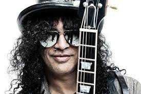

Uma das maiores lendas de todos os tempos
Saul Hudson (Londres, 23 de julho de 1965),[1] conhecido pelo seu nome artístico Slash, é um guitarrista anglo-americano mundialmente famoso como integrante da formação clássica da banda Guns N' Roses, com quem alcançou sucesso mundial no final da década de 1980 e início dos anos 90. Em sua carreira posterior, Slash integrou algumas outras bandas de diversos estilos, bem sucedidas em sua maioria, e em 2011 iniciou uma carreira solo, em que até agora lançou cinco discos.
Slash completou a formação clássica do Guns N' Roses em 1986